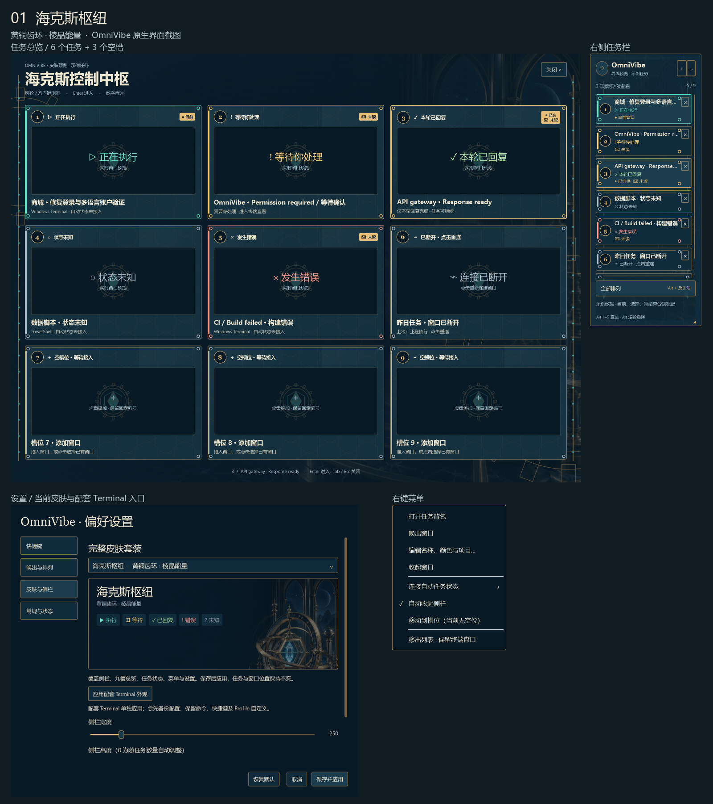
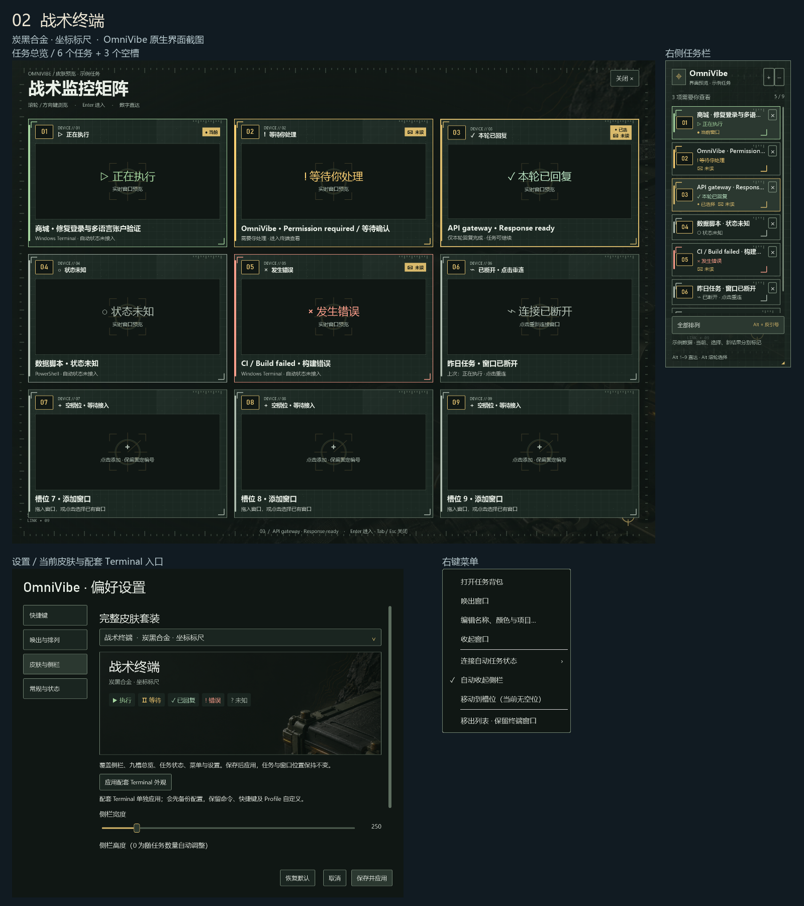
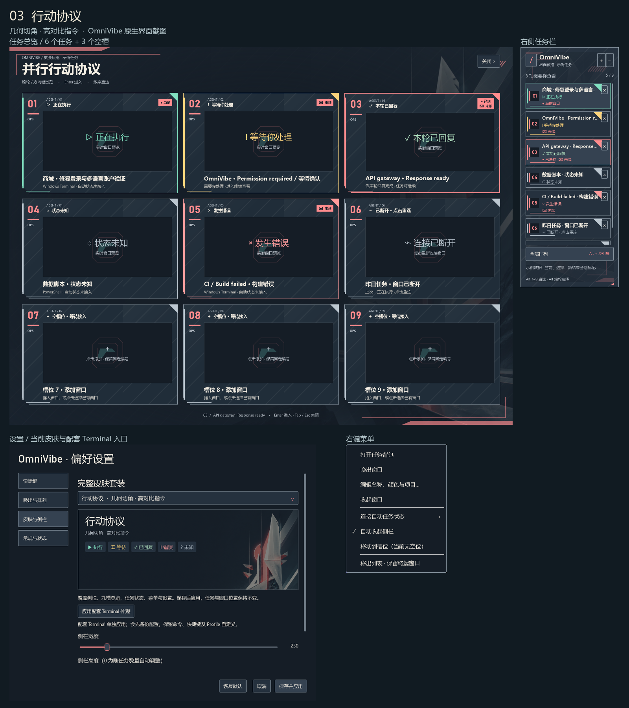
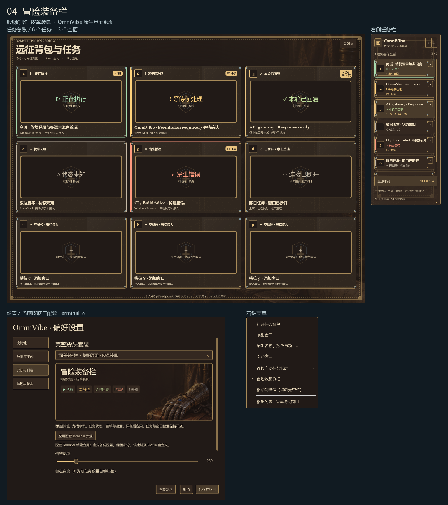
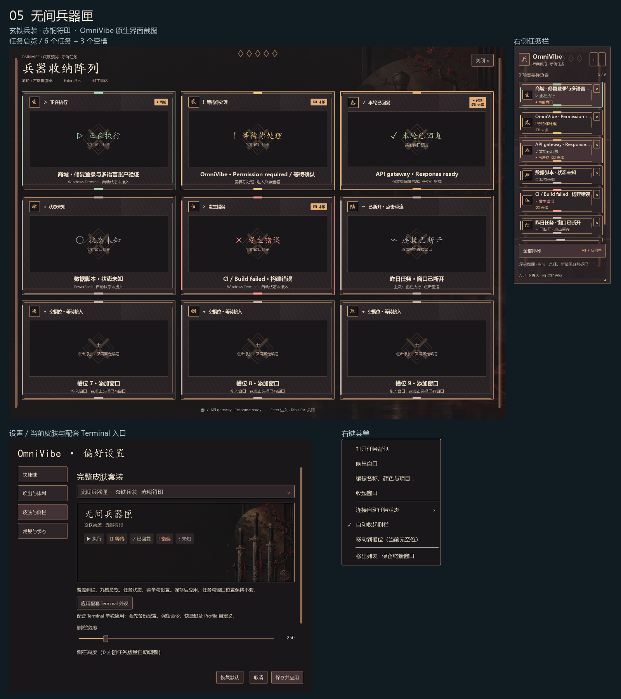
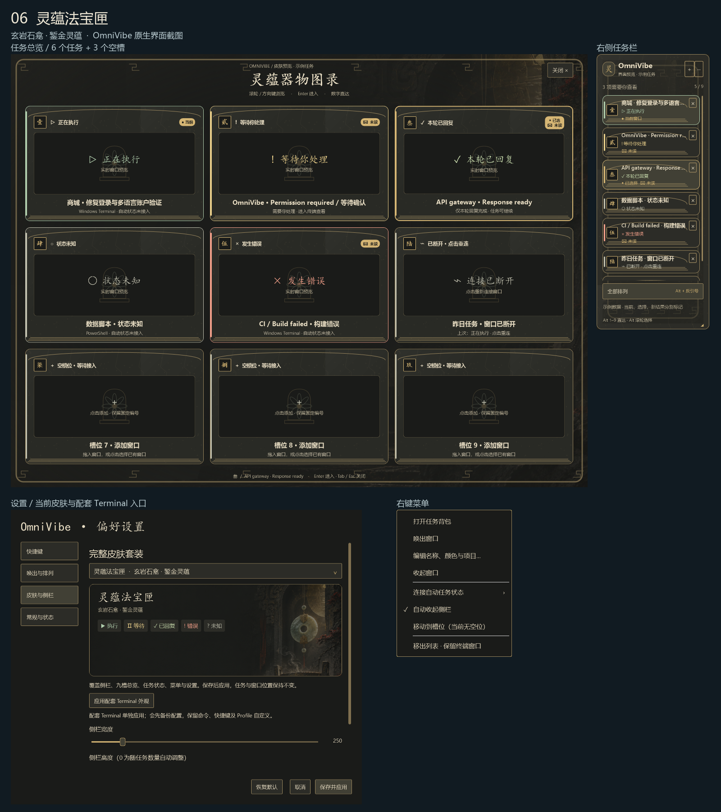
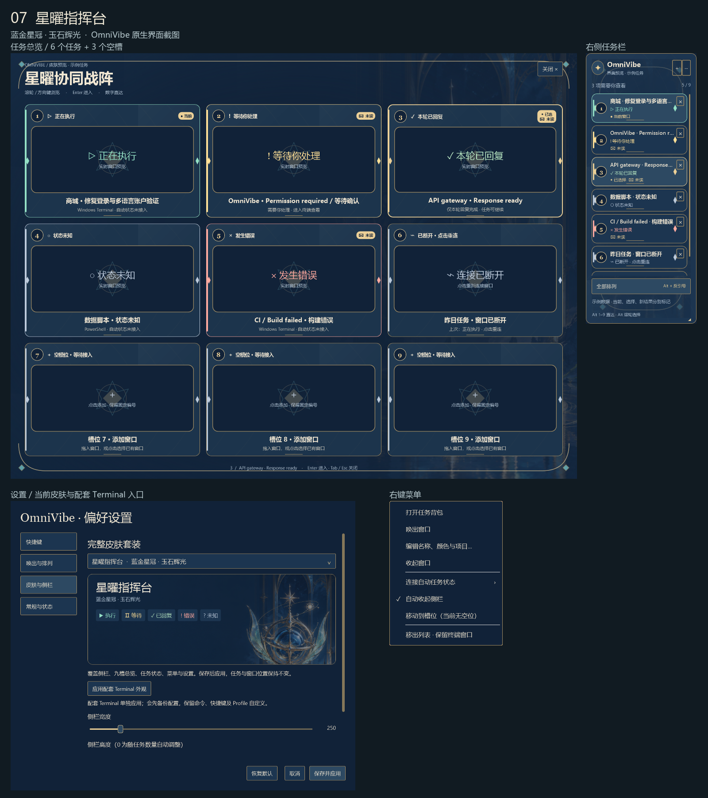
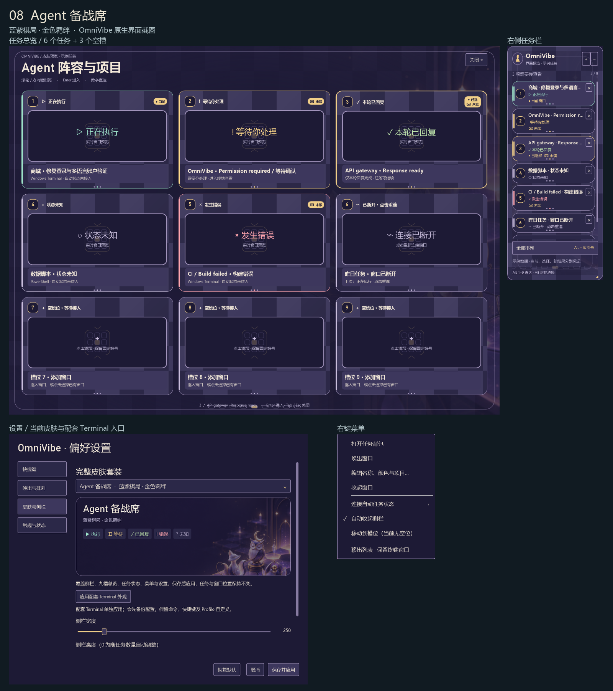
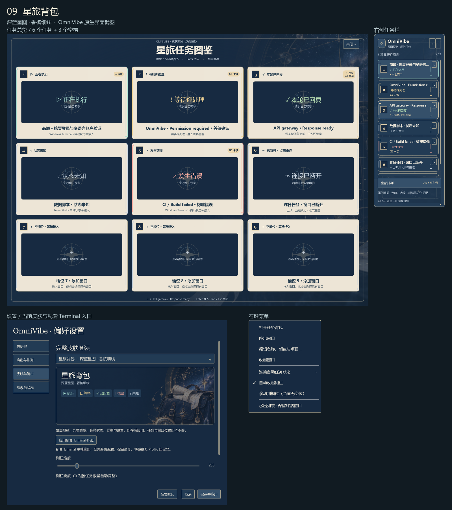
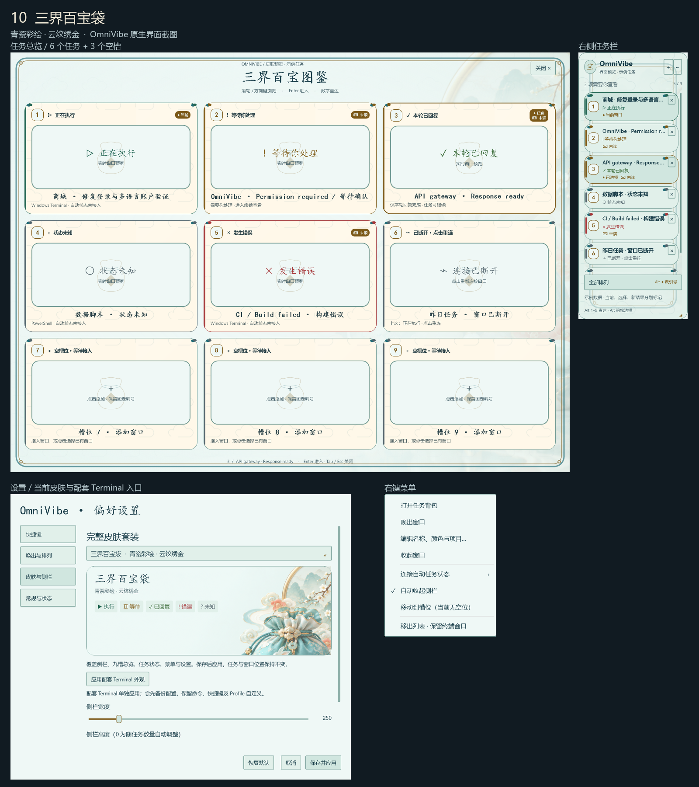

每套展示实际 WPF 原生界面的任务总览、常驻任务栏、皮肤设置和右键菜单。点击截图可放大。示例包含五种执行状态、断开连接、未读与选中，以及三个空槽；无真实任务内容。
检验与校准记录 · 设计候选 · 配套 Terminal 插画与特效见仓库 themes/windows-terminal。
黄铜齿环 · 棱晶能量

炭黑合金 · 坐标标尺

几何切角 · 高对比指令

锻钢浮雕 · 皮革装具

玄铁兵装 · 赤铜符印

玄岩石龛 · 錾金灵蕴

蓝金星冠 · 玉石辉光

蓝紫棋局 · 金色羁绊

深蓝星图 · 香槟细线

青瓷彩绘 · 云纹绣金
